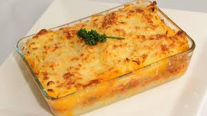

PASTEL DE PAPA

Este es el pastel de papa que hace Santiago en su casa
Ingredientes
- Papa
- Carne molida
- Huevo
- Queso
- Cebolla
- Leche
- Condimentos
- Masa(opcional)
- Harina 000
- Agua
- Aceite
- Sal
Preparacion
- Cortar cebolla en cuadraditos
- Deflemar
- Cocinar carne molida
- Mezclar cebolla con la carne molida
- Pelar las papas
- Poner a hervir las papas
- Poner huevos a hervir
- Una vez las papas estén blandas, hacer puré
- Hacer masa (opcional)
- Colocar harina en un bowl
- Colocar agua
- Colocar aceite
- Colocar sal
- Colocar condimento para saborizar (opcional), puesen ser:
- Estirar masa
Armado
- Colocar masa en un molde
- Colocar el picadillo
- Colocar huevo en pedacitos
- Colocar pure hasta cubrir todo
- Colocar Queso
- Cocinar por 30 min en horno precalentado a 180°
Receta de Pulina Cocina
Otras recetas